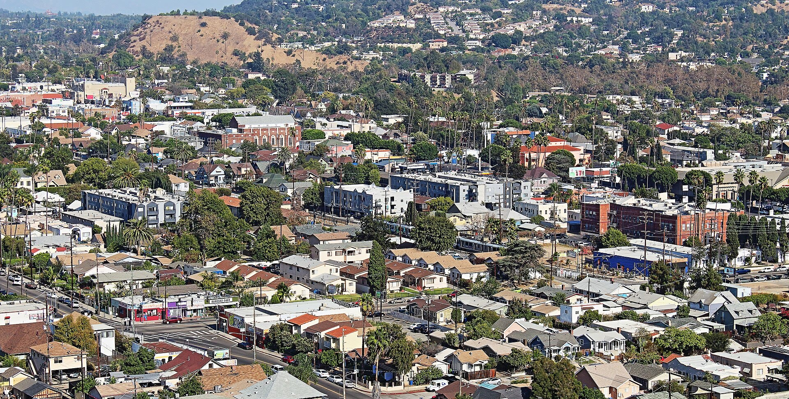
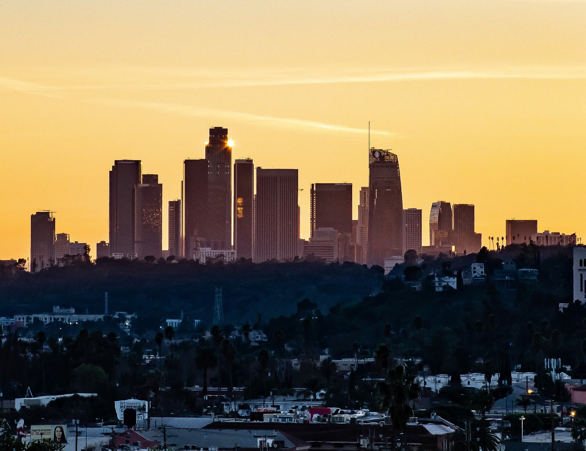
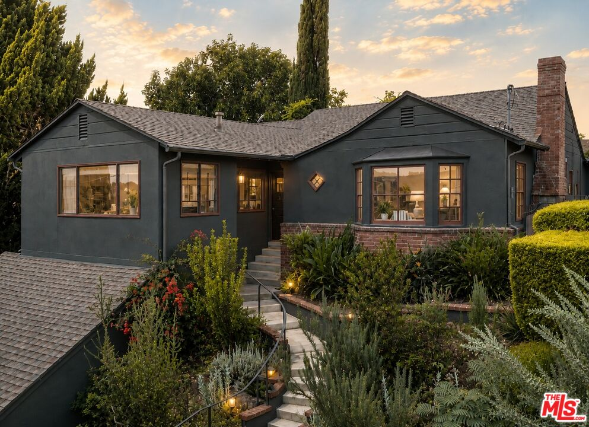

Highland
Park

Is Highland Park a good place to live?
Yes, if you want walkable blocks with real texture, Craftsman bungalows next to a taqueria next to a stained glass studio that's been making windows since before the 110 freeway ran through here, all within a few minutes of each other on foot. York Boulevard and Figueroa Street carry the daily rhythm, while the hills toward Mount Washington trade that walkability for quiet and a view instead. The honest tradeoff is how fast this neighborhood keeps changing, so the block you fall for today may look different in five years, which makes it worth walking more than once before you decide it's the one.
- Walk Score
- 77 / 100
- Established
- 1895
- Judson Studios here
- Since 1920
- Historic district
- LA's largest HPOZ
Walkability via Walk Score. Historic-district context via Los Angeles City Planning.
Highland Park Real Estate Agent
What it actually feels like to live here.
Highland Park was Los Angeles' first real suburb in the truest sense: the very first community the city ever annexed, back in 1895, when it was barely a hundred people and a saloon the neighbors wanted policed. What got built here over the next three decades was the Arts and Crafts movement made real, hundreds of Craftsman bungalows going up through the 1910s and 20s, enough of them still standing that Highland Park-Garvanza became the largest Historic Preservation Overlay Zone in the entire city when it was created in 1994.
What makes it work now is that none of that history reads as roped off or precious. York Boulevard and Figueroa Street run straight through the middle of it as an actual working commercial strip, not a museum piece, coffee and pizza and a hundred-year-old stained glass studio all sitting a few doors down from each other.
The honest tradeoff is pace of change. Highland Park has turned over more visibly than almost anywhere else on the East Side over the last fifteen years, so the character you're buying into is still actively being written, not something settled and finished.
Let me give you a tourCoffee · to closing time
The street that explains Highland Park.
York Boulevard is where you actually feel Highland Park's last twenty years happen in real time. It used to be mostly auto body shops. Then in 2008, Cafe de Leche opened on the corner of York and Avenue 50, one of the first specialty coffee shops in all of Northeast LA, and it's still credited as one of the sparks that turned this stretch into a real walkable strip of coffee, bars, and restaurants instead of a street you drove through to get somewhere else.
Walk it now and Kumquat Coffee, Triple Beam Pizza, and Highland Park Bowl, LA's oldest operating bowling alley, running since 1927, all sit within a few blocks of each other, alongside the antique shops that gave this stretch its older nickname, Antique Row, before anyone called it hip.
Explore Highland ParkWhere in LA is Highland Park?
Highland Park sits in Northeast LA along the Arroyo Seco, with Eagle Rock just north, Mount Washington and Montecito Heights rising to the west, Cypress Park and Lincoln Heights to the south, and South Pasadena and Pasadena just across the city line to the northeast. The 110 Arroyo Seco Parkway, the country's first freeway, runs along its western edge.
Figueroa Street and York Boulevard are the two commercial spines, running roughly parallel a few blocks apart. North Figueroa carries the old Route 66 history, Chicken Boy and Galco's Soda Pop Stop both still stand along it, while the streets climbing east and west of both corridors hold the Craftsman-bungalow blocks the neighborhood is known for.
Places I keep sending people to.

Cafe de Leche
One of Northeast LA's first specialty coffee shops, and one of the sparks that helped York Boulevard become the walkable strip it is now.

Triple Beam Pizza
Nancy Silverton and Matt Molina's Roman-style pizza al taglio, sold by weight and cut with scissors.

Highland Park Bowl
LA's oldest operating bowling alley, with eight restored lanes, hand-painted ceilings, and nearly a century of neighborhood history.

Judson Studios
Landmark, not a restaurant. The country's oldest family-run stained glass studio has worked from this Avenue 66 building since 1920.

Bob Baker Marionette Theater
Landmark, not a restaurant. The beloved puppet theater moved into the old York Theatre in 2019 and keeps pulling the strings here.
Schools in and around Highland Park
GreatSchools ratings are current as of September 2026 and may change. A rating is not the whole story. School assignments and program eligibility depend on the exact property address; verify through the LAUSD School Directory.
Parks & outdoor time

Sycamore Grove Park
Fifteen acres along the Arroyo Seco, with a history tied all the way back to Highland Park's annexation.

Ernest E. Debs Regional Park
Two hundred eighty-two acres of hillside trails, walnut and oak woodland, and views from downtown to the San Gabriel Mountains.
Highland Park homes that have made the case.

Obsession No. 011
232 La Follette Drive
Homestead chic meets turn-of-the-century Vogue in a Mt. Angelus home where every wallpaper choice, built-in, and collected detail feels deeply considered.
See why it made the editHighland Park on your mind? I've got you.
If character, walkability, and a real sense of history matter more to you than a blank slate, I can walk you block by block through where that's still true here and where it's already priced in.
Let's start hereLos FelizSilver LakePasadenaSherman OaksStudio CityWoodland Hills